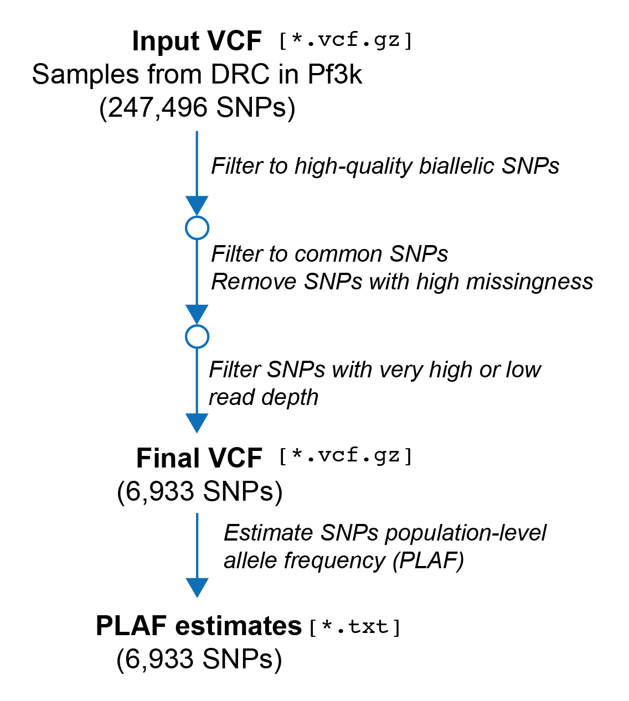

Part 1: Preparing data for deconvolution with DEploidIBD
Overview
In this section of the tutorial we will prepare our input data to run DEploidIBD. In particular, we will need to: - Filter our input VCF file - Prepare a file containing population-level allele frequency (PLAF) estimates

Prerequisites
Before beginning this section, please make sure you have: - git cloned the PGEforge repository so that you can access some example data (TODO: improve) - completed the “Installation” section of the tutorial.
Setup
We are going to create some folders to organise the outputs of this tutorial and to make it easy to access the data. First, create a directory for the tutorial:
mkdir DEploidIBD-tutorial
cd DEploidIBD-tutorialNext, let’s create a softlink within the DEploidIBD-tutorial directory to the PGEforge data directory:
ln -s <path/to/PGEforge/data> .This soft link (also known as a symbolic link) will allow us to access the contents of the PGEforge/data directory without using a long relative or absolute path. For example, you should be able to type:
ls data…and see folders containing example data made available in the PGEforge repository.
Finally, we will make a few other directories that will be useful for organising our outputs:
mkdir -p {data_filtered/intermediates,results,scripts}Our directory structure should now look like this:
.
├── data -> /path/to/PGEforge/data
├── data_filtered
│ ├── intermediates
├── results
└── scriptsFiltering the input VCF File
The primary input of DEploidIBD is a Variant Call Format (VCF) file containing information about the genotypes and allelic depths of samples in our population. Before running DEploidIBD, it is important that the variants within this VCF file are carefully filtered. There are three main objectives of this filtering: 1. Remove incompatible variants. - DEploidIBD works on biallelic SNPs; indels or multiallelic SNPs are not supported. 2. Remove problematic variants. - There can be artifacts in sequencing data, particularly during read mapping, that can negatively impact the inferences made by DEploidIBD. We will attempt to remove these beforehand. 3. Remove superfluous variants. - Depending on your application, you may not need all of the varaints in your VCF. Using less will reduce the runtime of DEploidIBD
Filter to high-quality biallelic SNPs
Let’s begin. We will use the VCF that was downloaded from the Pf3k project and filtered to samples from Democratic Republic of Congo. We can define a variable pointing to the file path:
INPUT_VCF=data/wgs/pf3k/DRCongo/SNP_INDEL_Pf3D7_ALL_v3.combined.filtered.vqslod6.biallelic_snp.DRCongo.vcf.gzThis VCF has already been filtered to high-quality biallelic SNPs. But for completeness, we will run the command that was used to perform this filtering here (TODO: include a quality filter):
echo "Filtering to high-quality biallelic SNPs..."
FILT1_VCF=data_filtered/intermediates/pf3k.DRCongo.biallelic_snp.vcf.gz
bcftools view --types snps --min-alleles 2 --max-alleles 2 $INPUT_VCF \
| bcftools +fill-tags -Oz -o $FILT1_VCF -- -t All,F_MISSING
echo "Done."We have also uesd the bcftools +fill-tags command to recompute information about our variant sites after filtering.
A useful subcommand in within bcftools is bcftools stats. This computes a variety of summary statistics and distributions for a given VCF file, and outputs the results to the terminal. Running the following command:
bcftools stats $FILT1_VCF | grep ^SNwill extract only the key summary statistics. Here, your output should be:
SN 0 number of samples: 113
SN 0 number of records: 247496
SN 0 number of no-ALTs: 0
SN 0 number of SNPs: 247496
SN 0 number of MNPs: 0
SN 0 number of indels: 0
SN 0 number of others: 0
SN 0 number of multiallelic sites: 0
SN 0 number of multiallelic SNP sites: 0You can see that we have 113 samples and 247496 SNPs. Importantly, there are no indels or biallelic SNPs in the VCF file.
Filter to common SNPs Next, we will filter to common SNPs. SNPs that are very rare will not be present in many samples and will be less informative for inferring COI than common SNPs. Moreover, as most Plasmodium falciparum SNPs are rare, this is a good way to remove a large number of SNPs and reduce the runtime of DEploidIBD. Here, we are going to only keep SNPs which have a population-level allele frequency (PLAF) of between [0.1, 0.9]. There is a significant disadvantage though, in that for the SNPs that are removed we will not get phasing information. If you are only interested in COI and IBD estimates, this will not be a problem. But if you are interested in phasing specific rare variants, you should consider either excluding this step, or a least making sure that your variants of interest are retained.
At the same time, we will also remove sites with more than 10% missingness.
echo "Filtering to common SNPs..."
FILT2_VCF=data_filtered/intermediates/pf3k.DRCongo.biallelic_snp.af10-0.90.vcf.gz
bcftools view $FILT1_VCF -e 'F_MISSING >= 0.1' --min-af 0.1 --max-af 0.9 -Oz -o $FILT2_VCF
echo "Done."Let’s check the number of SNPs left after this filtering:
SN 0 number of samples: 113
SN 0 number of records: 7869
SN 0 number of no-ALTs: 0
SN 0 number of SNPs: 7869
SN 0 number of MNPs: 0
SN 0 number of indels: 0
SN 0 number of others: 0
SN 0 number of multiallelic sites: 0
SN 0 number of multiallelic SNP sites: 0So by filtering to SNPs with a PLAF between 10 and 90%, we have reduced our VCF to 3.1% (7869/247496) of the SNPs.
Filter mapping artifacts using depth Next, we will remove sites with very low or very high mean read depths. Sites with very low depth will produce noisy data and are worth removing. Sites with abnormally high depth may represent areas with issues during mapping. For the purpose of the tutorial, we will just perform a simple filtering using fixed thresholds:
echo "Filtering based on depth..."
FINAL_VCF=data_filtered/pf3k.DRCongo.final.vcf.gz
bcftools view $FILT2_VCF -i 'MEAN(FORMAT/DP) >= 20 & MEAN(FORMAT/DP) <= 100' -Oz -o $FINAL_VCF
echo "Done."If you are doing this on your own data, it would be better to filter depth based on the read depth distribution of your samples. For example, you could exclude sites with a mean depth below the 5th- or above the 95th-percentiles.
Now our VCF file has been reduced to 6933 variants. Further filtering is possible, but for COI, proportion and IBD estimation this VCF should be adequate.
Create the population-level allele frequency (PLAF) file
DEploid and DEploidIBD require as input estimated allele frequencies for sites in the local population. In our case, the VCF we have been filtering represents all samples from Democratic Republic of the Congo in Pf3k, and we can treat this as our population. We will use bcftools query to extract the allele frequencies, and put them in an appropriate format for DEploidIBD.
PLAF_TXT=data_filtered/pf3k.DRCongo.final.plaf.txt
echo -e 'POS\tCHROM\tPLAF' > $PLAF_TXT
bcftools query -f '%CHROM\t%POS\t%AF\n' $FINAL_VCF >> $PLAF_TXTLet’s quickly look at the output:
head $PLAF_TXTWhich produces:
POS CHROM PLAF
Pf3D7_01_v3 95680 0.378378
Pf3D7_01_v3 95906 0.288288
Pf3D7_01_v3 98866 0.221239
Pf3D7_01_v3 100330 0.696429
Pf3D7_01_v3 107823 0.283186
Pf3D7_01_v3 108002 0.362832
Pf3D7_01_v3 114473 0.579646
Pf3D7_01_v3 125303 0.451327
Pf3D7_01_v3 130339 0.659292The PLAF file has a row for each SNP and three columns: the chromosome, position, and an estimate of the PLAF.
Summary
In this section we have taken an input VCF representing our population of interest, and we have filtered it down to a smaller set of variants which will be sufficient for COI, proportion and within-sample IBD estimation. From this VCF, we have created a text file containing PLAFs for each SNP which will be used when we run DEploidIBD.